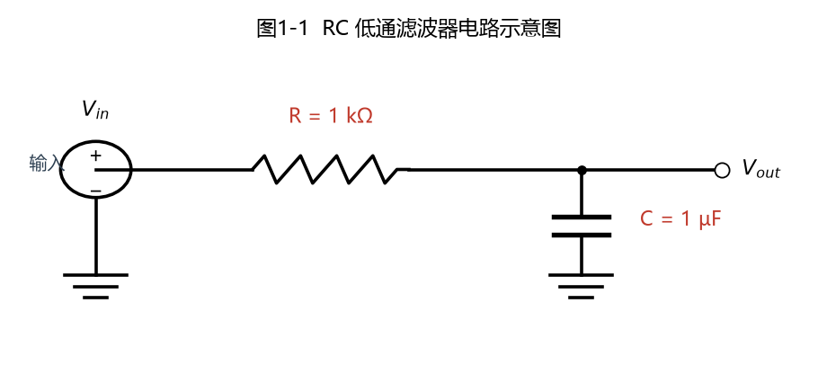
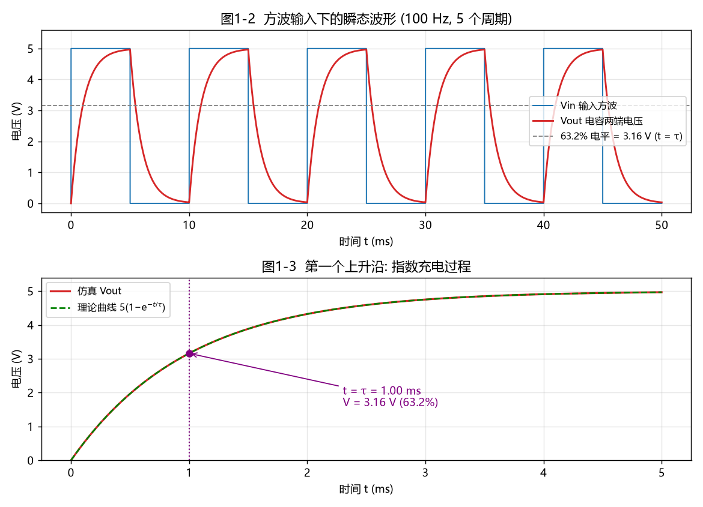
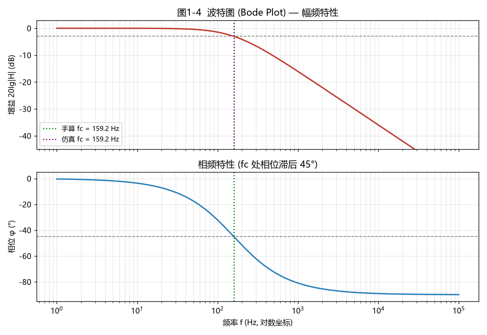
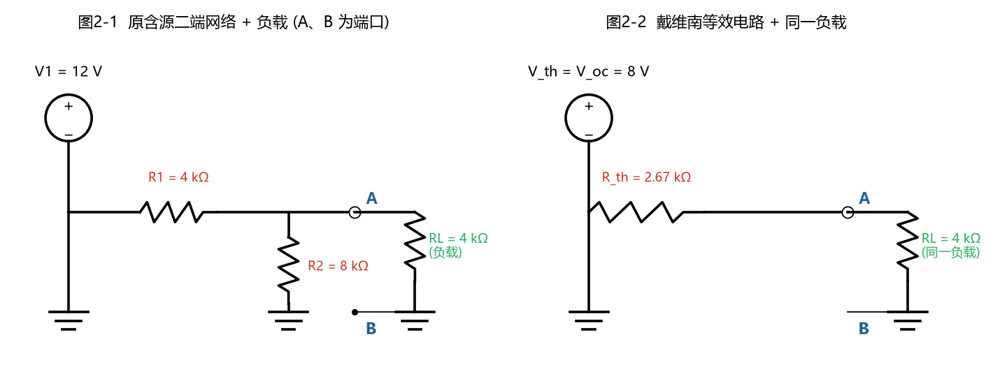
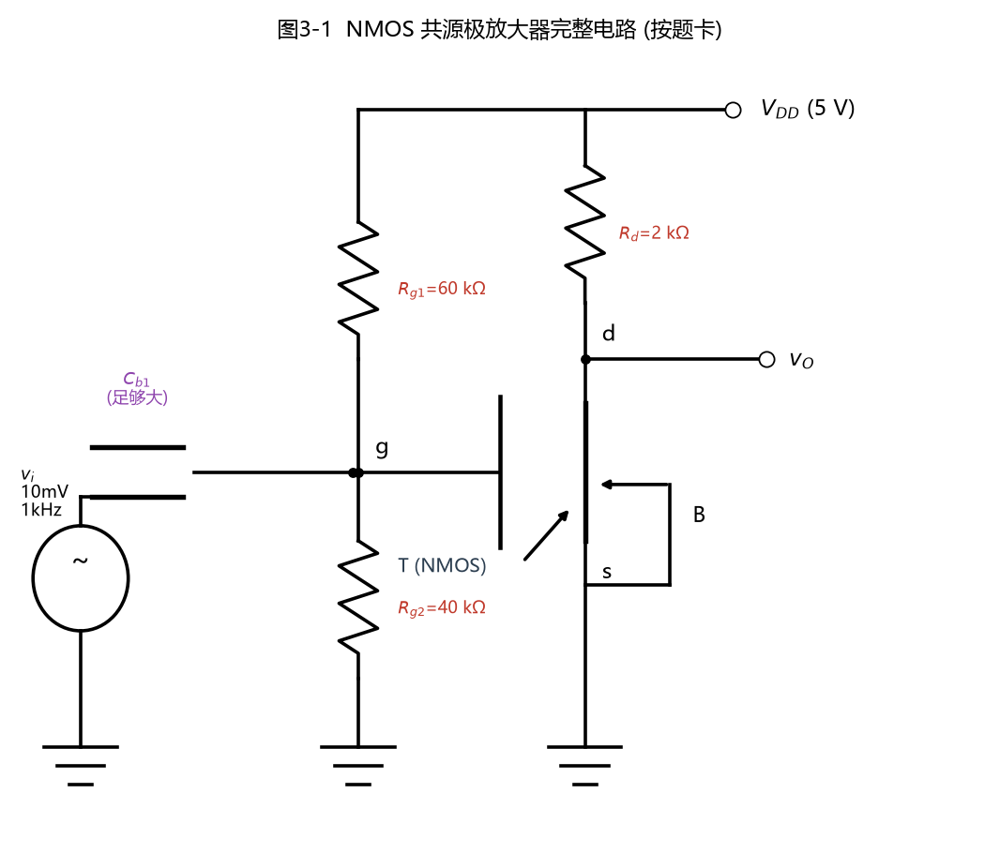
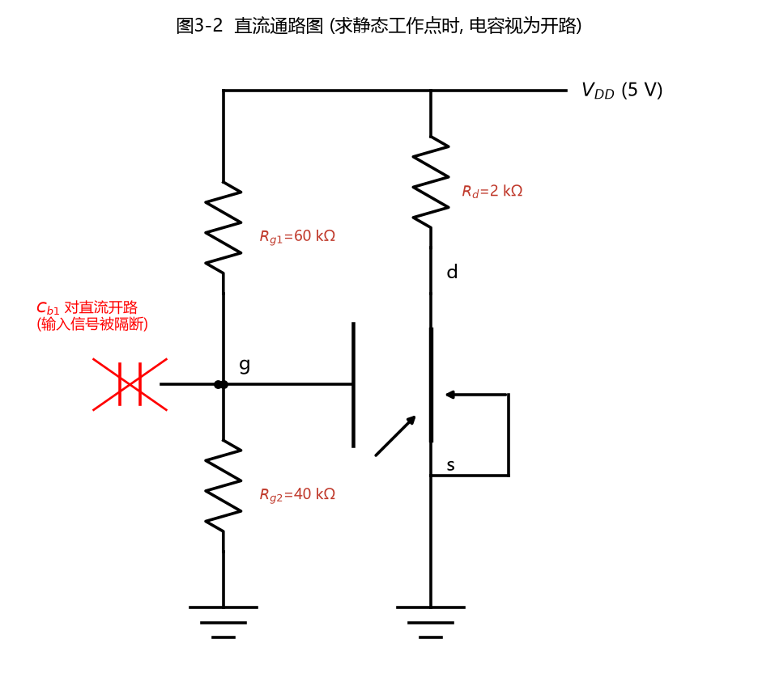
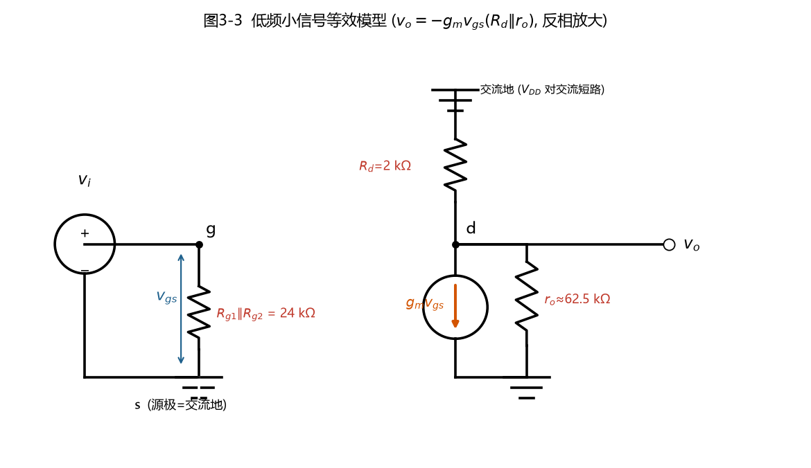
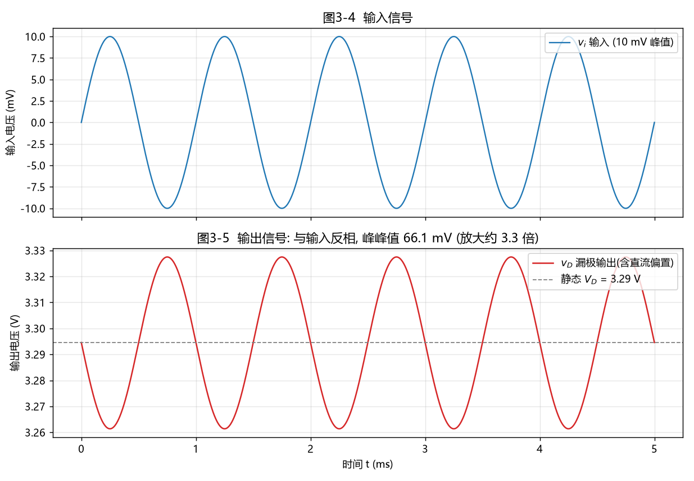
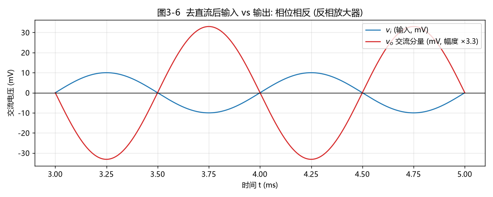
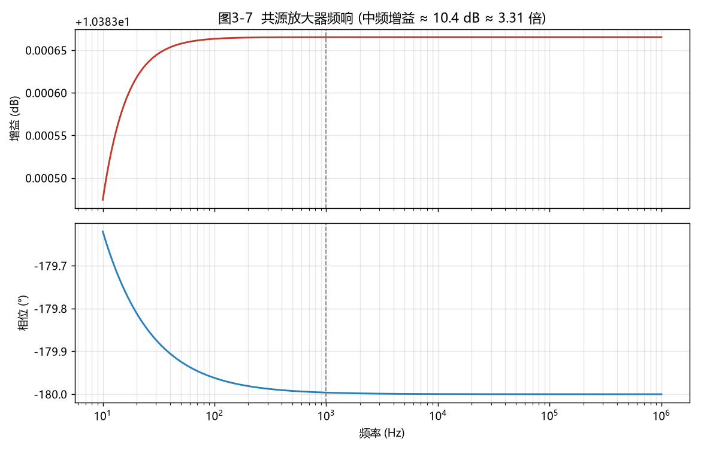

本报告用 Python + PySpice（调用 Ngspice 仿真引擎） 完成三个电路： ① RC 低通滤波器 ② 戴维南定理验证 ③ NMOS 共源极放大器
阅读本报告不需要任何基础：第一次出现的专业名词和符号都会用「大白话」解释。
看后面的内容前，先花 2 分钟认识这些"零件"和"字母"：
| 符号 | 名称 | 大白话解释 | 常用单位 |
|---|---|---|---|
| V | 电压 (Voltage) | 电的"压力"，类似水压。电池两端的电压推动电荷流动 | 伏特 V（伏）、mV（毫伏，1mV = 0.001V） |
| I | 电流 (Current) | 电荷流动的"流量"，类似水管里的水流量 | 安培 A（安）、mA（毫安，1mA = 0.001A） |
| R | 电阻 (Resistance) | 对电流的"阻碍"，类似水管变窄 | 欧姆 Ω（欧）、kΩ（千欧，1kΩ = 1000Ω） |
| C | 电容 (Capacitor) | 能储存电荷的"小水桶"，通交流、隔直流 | 法拉 F、µF（微法，1µF = 百万分之一 F） |
| f | 频率 (Frequency) | 信号每秒钟来回变化的次数 | 赫兹 Hz（1kHz = 1000Hz，即每秒 1000 次） |
| T | 周期 (Period) | 信号变化一次所用时间，T = 1/f | 秒 s、ms（毫秒，1ms = 0.001s） |
| GND | 地 (Ground) | 电路中统一的 0V 参考点，符号是三条渐短横线 | — |
| DC | 直流电 | 方向大小不变的电，如电池 | — |
| AC | 交流电 | 大小方向周期性变化的电，如家里插座、正弦信号 | — |
| 名称 | SPICE 指令 | 大白话 |
|---|---|---|
| 直流工作点 | .op | 给电路通上直流电，算出每个点的电压、每条支路的电流（"静态体检"） |
| 瞬态分析 | .tran | 让时间推进，观察电压随时间怎么变化（示波器看到的波形） |
| 交流分析 | .ac | 慢慢改变输入信号频率，看电路对不同频率的放大/衰减情况（画波特图） |
| 项目 | 版本/说明 |
|---|---|
| 操作系统 | Windows |
| Python | 3.12（便携版，位于 python312/） |
| PySpice | 1.5（用 Python 代码描述电路） |
| Ngspice | 47（真正做数学计算的仿真引擎，被 PySpice 调用） |
| numpy / scipy / matplotlib | 数据处理、曲线拟合、画图 |
运行方法（在本文件夹打开终端）：
python task1_rc_lowpass.py # 任务①，生成 3 张图 + results_1.json
python task2_thevenin.py # 任务②，生成 1 张图 + results_2.json
python task3_mos_amplifier.py # 任务③，生成 5 张图 + results_3.json
运行时出现的
Unsupported Ngspice version 47只是版本名单提示，不影响仿真结果。
滤波器就像一个"筛子"：低通滤波器允许低频信号顺利通过，把高频信号挡下来（衰减掉）。 生活例子：音响调节低音时，就是让低通滤波器把高频杂音滤掉，只留低沉的声音。

电路连接说明（从左往右看）：
参数（本题允许自定）：R = 1 kΩ，C = 1 µF；测试用方波 0↔5V、频率 100 Hz。
τ 表示电容充放电的"快慢"。τ 越大，电容充得越慢，波形越平缓：
τ = R × C = 1000 Ω × 1×10⁻⁶ F = 1×10⁻³ s = 1.000 ms
物理意义：阶跃输入后，输出充到最终值 63.2% 所花的时间正好是 τ（约 3.16V）。
信号频率低于 fc 能顺利通过；高于 fc 开始明显衰减。在 fc 处输出幅度降为输入的 1/√2 ≈ 70.7%：
1 1
fc = ─────── = ───────────────────── ≈ 159.15 Hz
2πRC 2π × 1000 × 1×10⁻⁶
输入 100Hz 方波（在 0V 和 5V 之间跳变），观察电容两端电压 Vout：

上图（图1-2）解读：
下图（图1-3）解读：仿真曲线（红）与理论公式 Vout(t) = 5×(1 − e^(−t/τ))（绿色点线）完全重合。
把输入换成幅度 1V 的正弦波，让频率从 1Hz 扫到 100kHz，记录输出/输入的幅度比和相位差，得到波特图（Bode Plot）：

| 比较项目 | 手算理论值 | PySpice 仿真值 | 相对误差 |
|---|---|---|---|
| 时间常数 τ | 1.000 ms | 1.000 ms（曲线拟合） | 0.00006% |
| 截止频率 fc | 159.15 Hz | 159.15 Hz（−3dB 点） | 0.0015% |
仿真值与手算值误差小于 0.002%，RC 低通滤波器的 τ 与 fc 公式得到验证；波特图清晰展示了"低频通过、高频衰减、截止点相位滞后 45°"的特性。
任何一个"里面有电源、有一堆电阻"的电路，只要你从两个接线端子（记为 A、B）看进去， 对外界（比如接在 A、B 上的负载）来说，整个电路都可以偷偷换成一个更简单的等效电路，效果完全一样：
一个理想电压源 V_th ＋ 一个串联电阻 R_th
两个关键量怎么得到：
参数：V1 = 12V，R1 = 4 kΩ，R2 = 8 kΩ，外接负载 RL = 4 kΩ。

R1、R2 串联分压：
R2 8k
V_oc = V1 × ────── = 12 × ──────── = 12 × ⅔ = 8.000 V
R1+R2 4k + 8k
短接后 R2 被旁路（电流全走短接线），只剩 R1 接在 12V 上：
V1 12
I_sc = ───── = ───── = 3.000 mA
R1 4k
把电压源"置零"（理想电压源用导线代替），从 A、B 看进去，R1 和 R2 变成并联（记作 R1∥R2）：
R1 × R2 4k × 8k
R_th = ───────── = ───────── = 2.667 kΩ
R1 + R2 12k
验算：V_oc / I_sc = 8 / 3mA = 2.667 kΩ ✓
RL 4k
V_L = V_oc × ─────────── = 8 × ───────── = 4.800 V
R_th + RL 2.667k + 4k
V_L 4.8
I_L = ────── = ─────── = 1.200 mA
RL 4k
| 仿真 | 做法 |
|---|---|
| ① 测 V_oc | 端口悬空，.op 直接读 A 点电压 |
| ② 测 I_sc | A、B 间接一个 0V 电压源（相当于导线，同时充当电流表），读其电流 |
| ③ 接负载对比 | 原网络接 RL 与"V_th＋R_th 等效电路"接同一个 RL，分别读 V_L、I_L |
表 4-1 等效参数
| 项目 | 手算值 | 仿真值 | 误差 |
|---|---|---|---|
| 开路电压 V_oc | 8.000 V | 8.000 V | 0% |
| 短路电流 I_sc | 3.000 mA | 3.000 mA | 0% |
| 戴维南电阻 R_th = V_oc/I_sc | 2.667 kΩ | 2.667 kΩ | 0% |
表 4-2 接同一负载 RL = 4kΩ：原电路 vs 等效电路（仿真互验）
| 负载上的量 | 手算 | 原网络仿真 | 戴维南等效电路仿真 | 三者差异 |
|---|---|---|---|---|
| 负载电压 V_L | 4.800 V | 4.800 V | 4.800 V | 0 V |
| 负载电流 I_L | 1.200 mA | 1.200 mA | 1.200 mA | 0 A |
开路、短路、接负载三种情况下，手算、原电路仿真、等效电路仿真三者结果完全一致： 任意含源线性二端网络确实可以等效为一个电压源 V_th = 8V 串联一个电阻 R_th = 2.67kΩ，戴维南定理得到验证。
这个任务参数由题目固定，目的是验证一个晶体管放大电路的"静态工作点"和"放大倍数"。

| 元件/符号 | 数值 | 作用（大白话） |
|---|---|---|
| VDD | 5 V | 整个电路的直流供电电源 |
| Rg1 | 60 kΩ | 上偏置电阻，和 Rg2 一起把 G 极"预设"在一个合适电压 |
| Rg2 | 40 kΩ | 下偏置电阻（分压偏置电路） |
| Rd | 2 kΩ | 漏极电阻：把漏极电流的变化"翻译"成电压变化（输出） |
| Cb1 | 100 µF（视为足够大） | 输入耦合电容：让交流信号 vi 进入 G 极，同时挡住直流，不破坏偏置 |
| T | NMOS | 放大核心，K=0.8 mA/V²，V_th=1V，λ=0.02/V |
| vi | 10 mV、1 kHz 正弦波 | 待放大的输入小信号 |
| vo | 输出端（D 极） | 放大后的输出信号 |
模型参数含义：
分析放大器分两步走：先算直流（静态工作点），再算交流（小信号放大）。
静态工作点（Q 点）：没有输入信号（vi=0）时，电路各点的直流电压、电流，相当于放大器的"站立位置"。站得合适才能不失真地放大。
求直流时，电容 Cb1 相当于开路（断开），输入源被隔断：

MOS 管栅极不取电流，所以 Rg1、Rg2 就是纯串联分压：
Rg2 40k
V_G = VDD × ──────── = 5 × ───────── = 2.000 V
Rg1+Rg2 60k+40k
源极 S 直接接地：V_S = 0，因此：
V_GS = V_G − V_S = 2.000 V
过驱动电压 V_ov = V_GS − V_th = 2 − 1 = 1.000 V
管子工作在饱和区时的电流公式（含 λ）：
I_D = K·V_ov²·(1 + λ·V_DS)
V_DS = VDD − I_D·Rd （Rd 上的压降使 D 极电压低于 VDD）
两式联立（代入 K=0.8mA/V²、V_ov=1V、λ=0.02、Rd=2kΩ）：
I_D = 0.8m × (1 + 0.02×(5 − 2000·I_D))
= 0.8m × (1.1 − 40·I_D)
→ I_D = 0.8527 mA
→ V_DS = 5 − 0.8527m × 2k = 3.2946 V
（若先忽略 λ 粗算：I_D ≈ K·V_ov² = 0.8 mA，V_DS ≈ 3.4V，结果很接近。）
饱和区判断条件：
V_DS ≥ V_GS − V_th （即 V_DS ≥ V_ov）
3.2946 V ≥ 1.000 V ✓ 成立，余量 2.29V
✅ 管子确实工作在饱和区（恒流区/放大区），可以正常放大。
直流偏置确定后，把"直流电源短路、电容短路、MOS 管换成等效模型"，得到只看交流信号的小信号等效模型：

关键参数：
跨导 = "栅压变化 1V 能让漏极电流变化多少 A"，单位 S（西门子），数值小用 mS：
gm = 2K·V_ov = 2 × 0.8m × 1 = 1.600 mS
ro = 1 / (λ·I_D) = 1 / (0.02 × 0.8527m) ≈ 58.64 kΩ
增益 = 输出信号比输入信号放大了多少倍。
Av = −gm·Rd = −1.6m × 2k = −3.20 倍
Rd∥ro = 2k∥58.64k ≈ 1.934 kΩ
Av = −gm·(Rd∥ro) ≈ −3.09 倍
gm_eff = 2K·V_ov·(1+λV_DS) = 1.6m × 1.0659 = 1.705 mS
g_ds = K·V_ov²·λ = 16 µS （即 1/g_ds = 62.5 kΩ）
Av = −gm_eff / (g_ds + 1/Rd) = −1.705m / (16µ + 500µ) = −3.305 倍
负号"−"表示反相：输入往上走时输出往下走，相位相差 180°。
表 5-1 静态工作点「手算 vs 仿真」
| 项目 | 含义 | 手算值 | PySpice 仿真值 | 相对误差 |
|---|---|---|---|---|
| V_GS | 栅-源电压 | 2.0000 V | 2.0000 V | 0% |
| I_D | 漏极直流电流 | 0.8527 mA | 0.8527 mA | < 0.0001% |
| V_DS | 漏-源电压 | 3.2946 V | 3.2946 V | < 0.0001% |
| 饱和区判断 | V_DS ≥ V_ov | 3.29 ≥ 1 ✓ | 同样成立 ✓ | — |
SPICE 中 MOS 模型设置：LEVEL=1, VTO=1V, KP=1.6mA/V², W/L=1, LAMBDA=0.02，
因 SPICE 公式为 I_D = 0.5·KP·(W/L)·V_ov²(1+λV_DS)，取 KP=2K=1.6mA/V² 即与题给 K 一致。
输入 10mV、1kHz 正弦波，仿真 5 个周期：

去掉直流分量后把两者画在一起，反相关系一目了然：

输入达到正峰值 +10mV 时，输出恰好到负峰值；输入到负峰值时输出到正峰值 —— 典型的反相放大。
从波形实测：
实测增益 = − 输出峰峰值 / 输入峰峰值 = −66.10mV / 20mV = −3.305 倍

在 1kHz 处：增益 −3.305 倍（约 10.4 dB），相位 −180.0°，与瞬态实测完全一致； 中频段（约 100Hz～1MHz）增益曲线平坦，说明 1kHz 输入正落在放大器的正常工作频段内（低频段受 Cb1 影响增益下降，高频段受寄生电容影响下降）。
表 5-2 gm 与电压增益
| 项目 | 手算 | 仿真 | 说明 |
|---|---|---|---|
| 跨导 gm | 1.600 mS（基础）／1.705 mS（含 λ 严格值） | 由增益反推 ≈ 1.709 mS | 严格值与仿真吻合 |
| 电压增益 Av | −3.20（忽略 ro）／−3.09（教材口径）／−3.305（严格模型） | −3.305（瞬态实测）／−3.305（AC@1kHz） | 严格手算与仿真误差 0.0007% |
| 输出相位 | 180°（反相） | −179.996° ≈ −180° | 反相放大 ✓ |
说明：仿真结果比教材最简公式 −gm·Rd=−3.2 略大，是因为 SPICE 的严格小信号模型中 gm 本身带 (1+λV_DS) 因子（1.705mS > 1.6mS），该影响略超过 ro 的分流作用。用同一严格公式手算得到 −3.305，与仿真完全一致。
NMOS 共源放大器的静态工作点（V_GS=2V、I_D≈0.853mA、V_DS≈3.29V）手算与仿真完全一致，管子确认工作在饱和区； 小信号增益手算 −3.3 倍与仿真 −3.305 倍吻合，输入输出波形相位相反（反相放大），10mV 输入被放大到约 33mV 峰值输出。
| 电路 | 核心结论 | 手算与仿真最大误差 |
|---|---|---|
| ① RC 低通滤波 | τ=1ms、fc=159.15Hz；低频通过、高频衰减，fc 处相位滞后 45° | < 0.002% |
| ② 戴维南验证 | 12V 网络等效为 8V 串 2.67kΩ；接 4kΩ 负载时 V_L=4.8V、I_L=1.2mA，原网络与等效电路结果完全相同 | 0% |
| ③ NMOS 共源放大 | V_GS=2V、I_D=0.853mA、V_DS=3.29V（饱和区）；反相增益约 −3.3 倍，输出摆幅 66mVpp | < 0.001% |
三个电路的理论公式全部被 PySpice/Ngspice 仿真数据证实。通过本次实验也验证了"先直流分析定工作点、再小信号分析算增益"的模拟电路标准分析方法。
| 文件 | 内容 |
|---|---|
task1_rc_lowpass.py |
任务①源码：瞬态分析、AC 波特图、τ/fc 拟合与对比 |
task2_thevenin.py |
任务②源码：开路/短路/接负载三次仿真、原网络与等效电路互验 |
task3_mos_amplifier.py |
任务③源码：自定义 NMOS 模型、OP、瞬态、AC 分析与原理图绘制 |
circuit_1.png |
任务①电路图 |
transient_1.png / bode_1.png |
任务①瞬态波形图 / 波特图 |
circuit_2.png |
任务②原网络与戴维南等效电路图 |
circuit_3.png / dc_path_3.png / small_signal_3.png |
任务③完整电路 / 直流通路 / 小信号等效模型 |
waveforms_3.png / waveforms_ac_3.png / bode_3.png |
任务③瞬态波形 / 去偏置对比 / 频响曲线 |
results_1.json / results_2.json / results_3.json |
三个任务的全部数值数据 |